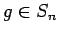
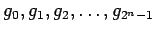
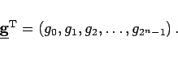

Analog zu den trigonometrischen Funktionen werden periodische Treppenfunktionen betrachtet. Man verwendet das Intervall I=[0,1) als Periodenintervall und unterteilt es in 2n gleichlange Teilintervalle. Sei Sn die Menge der periodischen Treppenfunktionen mit der Periode 1 über einer solchen Intervallteilung. Die zu Sn gehörenden Treppenfunktionen kann man als Vektoren eines endlichdimensionalen Vektorraumes auffassen, denn jede Funktion  wird durch ihre Werte  in den Teilintervallen bestimmt und kann demzufolge als Vektor aufgefaßt werden:
|  | (15.157) |
Die zu Sn gehörenden WALSH-Funktionen bilden mit einem geeigneten Skalarprodukt eine orthogonale Basis in diesem Raum. Die Basisvektoren können auf verschiedene Weise numeriert werden, so daß man sehr viele WALSH-Systeme erhält, die aber alle dieselben Funktionen enthalten. Es zeigt sich aber, daß drei Systeme zu bevorzugen sind: WALSH-KRONECKER-Funktionen, WALSH-KACZMARZ-Funktionen und WALSH-PALEY-Funktionen.
In Analogie zur FOURIER-Transformation wird die WALSH-Transformation aufgebaut, wobei die Rolle der trigonometrischen Funktionen von den WALSH-Funktionen übernommen wird. Man erhält z.B. WALSH-Reihen, WALSH-Polynome, WALSH-Sinus- und WALSH-Kosinus-Transformationen, WALSH-Integrale, und analog zur schnellen FOURIER-Transfornmation gibt es die schnelle WALSH-Transformation. Eine Einführung in Theorie und Anwendung der WALSH-Funktionen s. Lit. 15.6.